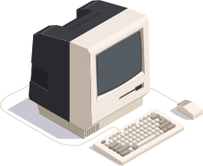

<!DOCTYPE html>
<html lang="fr">
<head>
<meta charset="UTF-8">
<meta name="viewport" content="width=device-width, initial-scale=1.0">
<title>Nacima Megherbi — Product Designer / UX UI</title>
<meta name="description" content="Portfolio de Nacima Megherbi, Product Designer / UX UI. Conception de produits numériques, de la discovery à la delivery.">
<link rel="preconnect" href="https://fonts.googleapis.com">
<link rel="preconnect" href="https://fonts.gstatic.com" crossorigin>
<link href="https://fonts.googleapis.com/css2?family=Titan+One&family=Inter:wght@400;500;600;700&display=swap" rel="stylesheet">
<style>
/* ============================================================
   CHARTE — tu peux tout ajuster ici
   ============================================================ */
:root{
  --bg:      #F7F7F5;   /* fond du site */
  --ink:     #171717;   /* typo principale + bordures fortes */
  --ink-2:   #5F5F5C;   /* typo secondaire */
  --line:    #DBDBD6;   /* bordures douces (encarts info) */
  --panel:   #FFFFFF;   /* zones "écran" (aperçus projets) */
  --maxw:    1080px;    /* largeur max du contenu */
  --radius:  14px;
  --radius-s:10px;
  --border:  2px solid var(--ink);      /* bordure "old school" franche */
  --border-soft: 1.5px solid var(--line);
}

*{box-sizing:border-box}
html{-webkit-text-size-adjust:100%}
body{
  margin:0;
  background:var(--bg);
  color:var(--ink);
  font-family:"Inter",system-ui,-apple-system,"Segoe UI",Roboto,sans-serif;
  font-size:18px;
  line-height:1.6;
  -webkit-font-smoothing:antialiased;
}
a{color:inherit;text-decoration:none}

/* Titres display */
h1,h2,.display{font-family:"Titan One",sans-serif;font-weight:400;letter-spacing:-.01em;line-height:1.02;margin:0}

.wrap{max-width:var(--maxw);margin:0 auto;padding:0 24px}

/* ---------- Barre du haut (LinkedIn, présent partout) ---------- */
.topbar{padding:22px 0 0}
.topbar .wrap{display:flex;justify-content:flex-end}
.btn{
  display:inline-flex;cursor:pointer;border-radius:var(--radius-s);
  transition:transform .18s ease,box-shadow .18s ease;
}
.btn img{display:block;height:52px;width:auto;border-radius:var(--radius-s)}
.btn:hover{transform:translate(-3px,-3px);box-shadow:6px 6px 0 var(--ink)}
.btn:focus-visible{outline:3px solid var(--ink);outline-offset:2px;border-radius:var(--radius-s)}

/* ---------- HÉRO ---------- */
.hero{padding:26px 0 8px}
.hero-illu{width:100%;max-width:320px;margin:0 0 30px;filter:saturate(.9)}
.hero-illu svg{width:100%;height:auto;display:block}
h1.name{font-size:clamp(52px,9vw,104px)}
h2.role{
  font-size:clamp(24px,4vw,40px);color:var(--ink-2);
  font-weight:600;margin-top:6px;
}
.intro{max-width:62ch;margin:26px 0 0;color:var(--ink)}
.intro p{margin:0 0 14px}
.intro strong{font-weight:700}
.intro .muted{color:var(--ink-2)}

/* ---------- Encarts info ---------- */
.facts{
  display:grid;grid-template-columns:1fr 1fr;gap:16px;
  margin:38px 0 0;max-width:920px;
}
.fact{
  display:flex;gap:14px;align-items:center;
  border:var(--border);border-radius:var(--radius);
  padding:16px 18px;background:var(--bg);
  box-shadow:4px 4px 0 var(--ink);
}
.fact .ico{
  flex:none;width:42px;height:42px;border:var(--border);
  border-radius:50%;display:grid;place-items:center;color:var(--ink);
  background:var(--bg);box-shadow:2px 2px 0 var(--ink);
}
.fact .ico svg{width:20px;height:20px}
.fact .lbl{font-size:15px;color:var(--ink-2);line-height:1.3}
.fact .val{font-weight:700;font-size:17px;color:var(--ink)}

/* ---------- Section Projets ---------- */
.section-head{display:flex;align-items:center;gap:14px;margin:80px 0 26px}
.section-head .ico{width:44px;height:auto;display:block;filter:drop-shadow(4px 4px 0 var(--ink))}
.section-head .ico svg{width:24px;height:24px}
.section-head h2{font-size:clamp(34px,6vw,56px)}

.grid{display:grid;grid-template-columns:1fr 1fr;gap:24px;padding-bottom:40px}

.card{
  display:flex;flex-direction:column;
  border:var(--border);border-radius:var(--radius);
  background:var(--bg);overflow:hidden;
  transition:transform .18s ease,box-shadow .18s ease;
}
a.card:hover{transform:translate(-3px,-3px);box-shadow:6px 6px 0 var(--ink)}
a.card:focus-visible{outline:3px solid var(--ink);outline-offset:3px}
.card .thumb{
  aspect-ratio:16/9;background:var(--panel);
  border-bottom:var(--border);
  display:grid;place-items:center;overflow:hidden;
}
.card .thumb img{width:100%;height:100%;object-fit:cover;display:block}
.card .thumb .ph{color:var(--ink-2);font-size:14px;font-weight:500;letter-spacing:.01em}
.card .body{padding:24px 24px 26px;display:flex;flex-direction:column;gap:8px;flex:1}
.card .eyebrow{font-weight:700;font-size:14px;color:var(--ink-2)}
.card h3{font-family:"Titan One",sans-serif;font-weight:400;font-size:26px;margin:0;line-height:1.05}
.card .desc{color:var(--ink-2);font-size:16.5px;margin:2px 0 0}
.tags{display:flex;flex-wrap:wrap;gap:8px;margin-top:16px}
.tag{
  font-size:13px;font-weight:600;color:var(--ink);
  border:var(--border-soft);border-radius:999px;padding:5px 12px;background:var(--bg);
}

/* ============================================================
   PAGE DÉTAIL
   ============================================================ */
.detail{padding:8px 0 40px}
.back{
  display:inline-flex;align-items:center;gap:8px;
  font-weight:600;font-size:15px;color:var(--ink);
  border:var(--border);border-radius:var(--radius-s);
  padding:8px 14px;margin:8px 0 34px;background:var(--bg);
  transition:transform .18s ease,box-shadow .18s ease;
}
.back:hover{transform:translate(-3px,-3px);box-shadow:6px 6px 0 var(--ink)}
.back:focus-visible{outline:3px solid var(--ink);outline-offset:2px}

.detail .eyebrow{font-weight:700;color:var(--ink-2);font-size:16px;margin-bottom:10px}
.detail h1.title{font-size:clamp(40px,7vw,72px)}
.detail .lede{max-width:60ch;font-size:20px;color:var(--ink);margin:18px 0 0}

/* Grille méta (réutilise le style des encarts info) */
.meta{
  display:grid;grid-template-columns:repeat(4,1fr);gap:14px;
  margin:34px 0 0;
}
.meta .cell{border:1.5px solid var(--ink-2);border-radius:var(--radius);padding:14px 16px;background:var(--bg);box-shadow:3px 3px 0 var(--ink-2)}
.meta .cell-head{display:flex;align-items:center;justify-content:space-between;gap:8px;margin-bottom:4px}
.meta .k{font-size:13px;color:var(--ink-2)}
.meta .v{font-weight:700;font-size:16px;line-height:1.25}
.meta .devices{display:flex;gap:6px;flex:none}
.meta .device-ico{width:16px;height:16px;color:var(--ink-2)}
.meta .device-ico svg{width:100%;height:100%;display:block}
.meta .tool-ico{width:26px;height:26px;border-radius:5px;overflow:hidden}
.meta .tool-ico img{width:100%;height:100%;display:block;object-fit:cover}

.detail .tags{margin-top:22px}

.hero-shot{
  margin:34px 0 0;border:var(--border);border-radius:var(--radius);
  background:var(--panel);aspect-ratio:16/8;display:grid;place-items:center;overflow:hidden;
}
.hero-shot img{width:100%;height:100%;object-fit:cover;display:block}
.hero-shot .ph{color:var(--ink-2);font-size:14px}

.case{max-width:68ch;margin:56px 0 0}
.case section{margin:0 0 46px}
.case h2{font-family:"Titan One",sans-serif;font-size:30px;margin:0 0 6px}
.case .rule{height:2px;background:var(--ink);width:44px;border-radius:2px;margin:0 0 18px}
.case p{margin:0 0 14px;color:var(--ink)}
.case ul{margin:0 0 14px;padding-left:20px;color:var(--ink)}
.case li{margin:0 0 8px}
.case .todo{color:var(--ink-2);font-style:italic}

/* Nav projet suivant/précédent */
.pager{
  display:flex;justify-content:space-between;gap:16px;
  border-top:var(--border-soft);margin-top:24px;padding-top:26px;flex-wrap:wrap;
}
.pager a{
  border:var(--border-soft);border-radius:var(--radius-s);
  padding:14px 18px;font-weight:600;background:var(--bg);
  transition:background .15s ease,color .15s ease;flex:1;min-width:220px;
}
.pager a:hover{background:var(--ink);color:var(--bg)}
.pager .k{display:block;font-size:13px;color:var(--ink-2);font-weight:600}
.pager a:hover .k{color:var(--bg)}
.pager .t{font-family:"Titan One",sans-serif;font-size:18px}
.pager .next{text-align:right}

footer{padding:40px 0 60px;color:var(--ink-2);font-size:14px}
footer .wrap{display:flex;justify-content:space-between;gap:16px;flex-wrap:wrap;border-top:var(--border-soft);padding-top:26px}

/* ---------- Responsive ---------- */
@media (max-width:760px){
  body{font-size:17px}
  .facts{grid-template-columns:1fr}
  .grid{grid-template-columns:1fr}
  .meta{grid-template-columns:1fr 1fr}
  .pager .next{text-align:left}
}
@media (prefers-reduced-motion:reduce){
  *{transition:none!important}
  a.card:hover{transform:none}
}

/* ============================================================
   PAGE DÉTAIL — blocs scrollytelling
   ============================================================ */
.blocks{max-width:960px;margin:44px 0 0}
.b-block{margin:0 0 60px}
.b-head{display:flex;align-items:baseline;gap:12px;margin:0 0 16px}
.b-head .emoji{font-size:24px;line-height:1;flex:none}
.b-head h2{font-family:"Titan One",sans-serif;font-size:clamp(26px,4vw,34px);margin:0}
.b-text{max-width:66ch}
.b-text p{margin:0 0 14px}
.b-text .lede{font-size:19px;color:var(--ink)}
.b-sub{max-width:66ch;margin:24px 0 0}
.b-sub h3{font-family:"Inter",sans-serif;font-weight:700;font-size:17px;margin:0 0 8px}
.b-sub ul{margin:0 0 6px;padding-left:20px}
.b-sub li{margin:0 0 8px;color:var(--ink)}
.result{max-width:66ch;border:var(--border);border-left-width:6px;border-radius:var(--radius-s);padding:14px 18px;margin:26px 0 0;font-weight:600}
.result .k{display:block;font-size:12px;color:var(--ink-2);font-weight:700;margin-bottom:3px;letter-spacing:.02em}
.note{max-width:66ch;color:var(--ink-2);font-size:15.5px;margin:20px 0 0}
.note b{color:var(--ink)}

/* Cartes d'impact (icône + texte, dans l'esprit des encarts d'accueil) */
.icards{display:grid;grid-template-columns:repeat(auto-fit,minmax(260px,1fr));gap:16px;margin:26px 0 0;max-width:66ch}
.icards.wide{max-width:100%}
.icard{display:flex;gap:16px;align-items:flex-start;border:var(--border);border-radius:var(--radius);padding:20px 22px;background:var(--bg)}
.icard .ico{flex:none;width:48px;height:48px;border:var(--border);border-radius:50%;display:grid;place-items:center;font-size:23px;line-height:1}
.icard .ico svg{width:24px;height:24px}
.icard .big{font-family:"Titan One",sans-serif;font-size:21px;line-height:1.15;margin:2px 0 6px}
.icard .desc{color:var(--ink-2);font-size:15.5px;line-height:1.5}

/* Figures */
.figs{display:grid;gap:22px;margin:28px 0 0}
.figs.c2{grid-template-columns:1fr 1fr}
.figs.mosaic{grid-template-columns:repeat(auto-fill,minmax(300px,1fr));gap:18px}
.figs.mosaic figcaption{font-size:13px}
.figs.two-one{grid-template-columns:1fr 1fr}
.figs.two-one > figure:last-child{grid-column:1 / -1}
.figs.small{max-width:560px}
/* Liste code couleur (pastilles) */
.color-list{list-style:none;padding:0;margin:0 0 6px}
.color-list li{display:flex;align-items:center;gap:11px;margin:0 0 9px;color:var(--ink)}
.color-list .sw{width:15px;height:15px;border-radius:50%;flex:none;border:1.5px solid var(--ink)}
figure{margin:0}
.fig{border:var(--border);border-radius:var(--radius);overflow:hidden;background:var(--panel);line-height:0}
.fig img{display:block;width:100%;height:auto}
figcaption{font-size:14px;color:var(--ink-2);margin-top:10px;line-height:1.45;padding:0 2px}

/* Avant / après */
.compare{display:grid;grid-template-columns:1fr 1fr;gap:22px;margin:28px 0 0}
.ba-label{display:inline-block;font-size:12px;font-weight:700;border:var(--border);border-radius:999px;padding:3px 12px;margin:0 0 10px}

/* Écrans mobiles */
.phones{display:flex;flex-wrap:wrap;gap:16px;margin:28px 0 0}
.phones figure{flex:1 1 130px;max-width:180px}
.fig-small{max-width:340px}
/* Palette / charte graphique */
.palette{display:flex;flex-wrap:wrap;gap:16px;margin:26px 0 0}
.swatch{border:var(--border);border-radius:var(--radius);overflow:hidden;width:150px}
.swatch .chip{height:88px}
.swatch .meta{padding:10px 12px;border-top:var(--border)}
.swatch .nm{font-weight:700;font-size:14px}
.swatch .hx{color:var(--ink-2);font-size:13px;margin-top:2px;text-transform:uppercase;letter-spacing:.03em}
.phones .fig{border-radius:22px}

/* ---------- Timeline verticale à mini-cards ---------- */
.tl-lede{max-width:66ch;font-size:19px;margin:0 0 20px}
.tl-legend{display:flex;gap:20px;flex-wrap:wrap;margin:0 0 26px}
.tl-legend span{display:inline-flex;align-items:center;gap:8px;font-size:14px;font-weight:600;color:var(--ink)}
.tl-legend i{width:13px;height:13px;border-radius:50%;border:2px solid var(--ink)}
.tl2{position:relative;padding-left:40px;margin:0}
.tl2::before{content:"";position:absolute;left:6px;top:12px;bottom:12px;width:2px;
  background-image:repeating-linear-gradient(to bottom,var(--ink) 0 4px,transparent 4px 10px)}
.tl2-item{position:relative;margin:0 0 12px;opacity:0;transform:translateX(-8px);
  transition:opacity .5s ease,transform .5s ease}
.tl2-item.in{opacity:1;transform:none}
.tl2-dot{position:absolute;left:-40px;top:13px;width:14px;height:14px;border-radius:50%;
  background:var(--c);border:2px solid var(--ink);box-shadow:0 0 0 3px var(--bg)}
.tl2-card{display:inline-block;border:2px solid var(--c);border-radius:12px;background:var(--bg);
  padding:10px 16px;font-weight:600;font-size:16px;color:var(--ink);line-height:1.3}
@media (prefers-reduced-motion:reduce){ .tl2-item{opacity:1;transform:none;transition:none} }

@media (max-width:760px){
  .figs.c2,.figs.two-one,.compare,.phones{grid-template-columns:1fr}
}
</style>
</head>
<body>

<div class="topbar">
  <div class="wrap">
    <a class="btn" href="https://www.linkedin.com/in/nacima-megherbi/" target="_blank" rel="noopener"></a>
  </div>
</div>

<main id="app" class="wrap" tabindex="-1"></main>

<footer><div class="wrap">
  <span>Nacima Megherbi — Product Designer / UX UI</span>
  <span>Paris, France</span>
</div></footer>

<script>
/* ============================================================
   TON CONTENU — édite tout ici.
   - image: chemin vers ton visuel (ex: "images/cabin.png").
            Laisse "" pour afficher un aperçu neutre.
   - Les [à compléter] sont des repères à remplacer par tes vrais chiffres.
   ============================================================ */
const PROJETS = [
  {
    slug:"applications-terrain",
    client:"SXD · VINCI Construction",
    titre:"Applications terrain",
    resume:"Outils web et mobile pour simplifier les inspections et les opérations terrain.",
    tags:["BtoB","IA","Design System","UX Strategy","From scratch"],
    image:"hifiWeb",
    meta:{
      "Rôle":"Product Designer (UX/UI)",
      "Année":"2024",
      "Périmètre":"Web + Mobile + Tablette",
      "Contexte":"Interne (BtoE) & vendu à des pros (BtoB)",
      "Outils":"Figma, Jira, Claude, Adobe Illustrator"
    },
    devices:["mobile","tablette","web"],
    tools:["figma","jira","claude","illustrator"],
    lede:"Concevoir, de zéro, une suite d'outils qui remplace la saisie papier des inspections d'ouvrages par une expérience pensée pour le terrain.",
    blocks:[
      {type:"text", title:"Rôle",
        body:[
          "Chez SXD · VINCI Construction, je suis l'unique designer de l'entreprise. J'ai participé à la conception de plusieurs projets web, mobile et tablette, aussi bien pour des applications internes que pour des clients BtoB."
        ]},

      {type:"text", title:"Contexte",
        body:[
          "Les inspections d'ouvrages se faisaient sur papier et tableurs Excel, avec une ressaisie ultérieure au bureau : données incomplètes, doublons, erreurs de report et délai important entre la constatation et l'exploitation.",
          "L'objectif : une application utilisable dans les conditions réelles du chantier — mobilité, connexion instable, rapidité de saisie — doublée d'un back-office web pour le suivi et l'exploitation des données."
        ]},

      {type:"timeline", emoji:"🗺️", title:"La démarche, étape par étape",
        lede:"De l'audit de l'existant jusqu'à la livraison en développement — un projet mené, testé et itéré avec les utilisateurs à chaque phase.",
        legend:[["UX","#BA96FB"],["UI","#C9D1FF"],["Développement","#171717"]],
        steps:[
          ["Audit de l'app actuelle","#BA96FB"],
          ["Interviews","#BA96FB"],
          ["Ateliers d'idéation","#BA96FB"],
          ["Définition des personas","#BA96FB"],
          ["Journey maps","#BA96FB"],
          ["Écriture des user stories","#BA96FB"],
          ["Réunion de backlog refinement","#BA96FB"],
          ["Atelier de co-conception","#BA96FB"],
          ["Sketching","#BA96FB"],
          ["Maquettes zoning","#BA96FB"],
          ["Tests utilisateur (prototype interactif)","#BA96FB"],
          ["Nouvelle proposition UX & modification V1","#BA96FB"],
          ["Présentation aux développeurs front","#BA96FB"],
          ["Benchmark graphique","#C9D1FF"],
          ["Conception de l'UI kit","#C9D1FF"],
          ["Conception des maquettes hi-fi","#C9D1FF"],
          ["Rédaction des tickets Jira (QA)","#171717"],
          ["Développement","#171717"],
          ["Audit de l'interface développée","#171717"],
          ["Écriture des tickets de modifications UI","#171717"]
        ]},

      {type:"section", emoji:"🧠", title:"Recherche & ateliers",
        lede:"Objectif — comprendre le flux réel des audits, repérer les points de friction et définir les besoins fonctionnels et ergonomiques, aussi bien pour les ingénieurs terrain que pour les équipes bureau.",
        parts:[
          {h:"Ateliers avec les utilisateurs", ul:[
            "Animation d'un atelier participatif pour cartographier le parcours existant.",
            "Recueil des frustrations et des besoins terrain.",
            "Sketching et post-its pour illustrer les interactions et les tâches clés."
          ]},
          {h:"Cartographie des flux et des données (user map)", ul:[
            "Analyse du parcours complet : collecte terrain → saisie Excel → simulation climatique → rédaction du rapport Word.",
            "Identification des points de friction, des doublons et des ruptures de flux."
          ]},
          {h:"Synthèse & propositions", ul:[
            "Élaboration de l'architecture de l'information des futures applications mobile et web.",
            "Schémas illustrant le flux simplifié proposé.",
            "Priorisation des fonctionnalités à intégrer dans la version pilote."
          ]}
        ],
        note:"<b>Utilisateurs</b> — ingénieurs et techniciens terrain, en environnement industriel et en mobilité.",
        figs:[
          {img:"workflow", cap:"Schéma du workflow proposé — présenté au client pour validation et ajustements."},
          {img:"ia", cap:"Architecture de l'information de chaque application — confirmée avec le client."}
        ]},

      {type:"section", emoji:"💻", title:"Wireframes & itérations",
        lede:"Objectif — donner forme à la solution imaginée en phase d'analyse et vérifier, avec les utilisateurs, que les parcours répondent réellement à leurs besoins sur le terrain.",
        parts:[
          {h:"Prototypage", ul:[
            "Wireframes lo-fi (zoning noir & blanc) pour tester rapidement les parcours et la hiérarchie de l'information.",
            "Itérations rapides après retours de l'équipe et du client.",
            "Prototypes interactifs Figma simulant les interactions clés : prise de photo, saisie de données, synchronisation terrain ↔ bureau."
          ]}
        ],
        body2:["Ces prototypes ont servi de support aux démonstrations client, pour valider la direction fonctionnelle et aligner toutes les parties prenantes avant le design final."],
        figs:[
          {img:"wireframes1", cap:"Phase 1 — Planification de la visite."},
          {img:"wireframes2", cap:"Phase 2 — Réalisation de la visite."}
        ]},

      {type:"section", emoji:"🔁", title:"Tests & feedback client",
        body:["Présentation du prototype interactif (web et mobile) directement aux utilisateurs. Le client pouvait laisser ses remarques, propositions et idées en commentaire, alimentant le cycle d'itérations."],
        parts:[
          {h:"Mon rôle", ul:[
            "Conception et itération des prototypes sur Figma.",
            "Animation des démos client et recueil des feedbacks.",
            "Ajustements UX à partir des retours utilisateurs.",
            "Préparation des écrans validés pour la phase hi-fi."
          ]},
          {h:"Ajustements issus des retours", ul:[
            "La disposition des champs de saisie.",
            "Les interactions photo / rapport.",
            "Les transitions entre les modes « terrain » et « bureau »."
          ]}
        ],
        body2:["En parallèle, réunions de backlog refinement avec l'équipe technique pour présenter les fonctionnalités et les parcours."],
        result:"Un parcours simplifié, fluide et validé par les utilisateurs avant la phase de design hi-fi.",
        figs:[
          {img:"protoflow", cap:"Prototype interactif annoté par le client dans Figma — support du cycle d'itérations."}
        ]},

      {type:"section", emoji:"✏️", title:"Zoom sur une itération",
        body:["Un exemple concret d'ajustement issu des retours utilisateurs."],
        parts:[
          {h:"Modifications", ul:[
            "Renommage de l'onglet « Galerie » en « List ».",
            "Passage d'une vue galerie à une vue en 3 panneaux : arborescence des ouvrages › liste des observations de l'ouvrage sélectionné › aperçu de l'observation."
          ]}
        ],
        result:"Une consolidation bien plus efficace : chaque observation est replacée dans son contexte, au lieu d'une simple mosaïque d'images.",
        compare:{
          before:{img:"iterAvant", label:"Avant", cap:"Vue galerie — mosaïque d'observations."},
          after:{img:"iterApres", label:"Après", cap:"Vue List — arborescence, observations contextualisées, aperçu."}
        }},

      {type:"section", emoji:"🎨", title:"Direction artistique — avant / après",
        body:["L'interface historique, datée et peu cohérente, freinait la lisibilité et l'adoption des outils internes. J'ai proposé une nouvelle direction artistique — plus claire, moderne et modulaire — validée par la direction produit. Cette refonte a posé les bases d'un design system pour harmoniser la suite d'applications métier Beyond."],
        compare:{
          before:{img:"daAvant", label:"Avant", cap:"Interface historique — datée et hétérogène."},
          after:{img:"daApres", label:"Après", cap:"Beyond Patrol · ma proposition de nouvelle direction artistique."}
        },
        parts:[
          {h:"Les partis pris", ul:[
            "Bleu et typographies de la charte Vinci.",
            "Hiérarchisation de l'information par widgets.",
            "Parcours fluidifiés.",
            "Composants modernes et réutilisables."
          ]}
        ]},

      {type:"section", emoji:"🖥️", title:"UI design & livraison",
        body:["Après validation des parcours, j'ai mis en forme la solution : un univers clair, lisible et cohérent avec l'identité Sixense. J'ai livré les maquettes finales mobile et web, tout en consolidant les composants dans le design system — pour une expérience fluide et robuste sur l'ensemble des supports."],
        phones:[
          {img:"hifiOnb", cap:"Onboarding — découverte des fonctionnalités."},
          {img:"hifiHome", cap:"Accueil — campagnes en cours."},
          {img:"hifiVisit", cap:"Visite — carte des assets & capteurs."}
        ],
        figs:[
          {img:"hifiWeb", cap:"Back-office web — vue carte d'une visite et points d'intérêt."}
        ]},

      {type:"section", emoji:"📈", title:"Impact & résultats",
        body:["Un flux terrain → bureau unifié : fin de la double saisie, données fiabilisées et exploitables directement."],
        cards:[
          {icon:"clock", big:"50 % de temps gagné à la consolidation",
           desc:"Plus besoin de télécharger les photos, de les trier parmi des centaines, ni d'associer manuellement chaque photo aux dégradations et aux formulaires : tout est déjà relié."}
        ]}
    ]
  },

  {
    slug:"discovery-roger-bullivant",
    client:"Roger Bullivant",
    contextLine:"Projet réalisé chez SXD · VINCI Construction",
    titre:"Discovery produit",
    resume:"Conception d'une solution digitale métier à partir d'une démarche de discovery.",
    tags:["BtoB","Discovery","Workshop","Co-conception","Prototypage"],
    image:"rbWebPf",
    meta:{
      "Rôle":"Product Designer (UX)",
      "Année":"2025",
      "Périmètre":"Discovery → prototypes",
      "Contexte":"Client UK · ateliers à distance",
      "Outils":"Figma, FigJam"
    },
    devices:["mobile","web"],
    tools:["figma"],
    lede:"Transformer un processus métier sous Excel en une direction produit claire et validée — en partant du problème, pas de la solution.",
    blocks:[
      {type:"text", title:"Contexte",
        body:[
          "Roger Bullivant, spécialiste britannique des fondations et des pieux préfabriqués, pilotait ses commandes de pieux (« pile ordering ») via un classeur Excel à macros : import des produits, codes et poids, prévisions hebdomadaires saisies à la main. Un système fonctionnel, mais fragile — données fragmentées, mises à jour lentes, erreurs de quantités et forte dépendance à des opérateurs peu à l'aise avec l'outil.",
          "Le besoin était réel, mais le périmètre produit restait flou et les parties prenantes nombreuses, aux attentes différentes. Se lancer directement dans le développement aurait été un pari coûteux. L'enjeu : transformer une intuition en un problème clairement défini et une direction validée."
        ]},

      {type:"timeline", emoji:"🗺️", title:"La démarche, étape par étape",
        lede:"Des ateliers à distance jusqu'à la restitution des prototypes — le parcours complet de la discovery, mené et validé avec le client à chaque étape.",
        legend:[["Ateliers & analyse","#BA96FB"],["Conception & prototypage","#C9D1FF"]],
        steps:[
          ["Atelier d'idéation","#BA96FB"],
          ["Atelier de co-conception","#BA96FB"],
          ["Pain points & opportunités","#BA96FB"],
          ["Priorisation des besoins","#BA96FB"],
          ["Analyse des flux de données","#BA96FB"],
          ["Organisation & tri de la matière","#BA96FB"],
          ["Architecture de l'information","#C9D1FF"],
          ["Sketching & wireframes","#C9D1FF"],
          ["Maquettes mobile & web","#C9D1FF"],
          ["Prototypes interactifs","#C9D1FF"],
          ["Restitution & validation client","#C9D1FF"]
        ]},

      {type:"section", emoji:"🎯", title:"Objectif de la discovery",
        body:["Comprendre en profondeur le processus métier, aligner les parties prenantes et faire émerger une solution digitale désirable — sur des bases validées, avant tout développement."],
        parts:[
          {h:"Mon rôle", ul:[
            "Cadrage et animation de l'ensemble de la démarche de discovery.",
            "Facilitation des ateliers à distance et structuration des apprentissages.",
            "Analyse des données, architecture de l'information, wireframes et prototypes.",
            "Alignement continu des parties prenantes autour d'un périmètre commun."
          ]}
        ]},

      {type:"section", emoji:"🧠", title:"Ateliers de discovery",
        body:["Deux ateliers menés à distance sur Figjam avec les équipes de Roger Bullivant (Royaume-Uni) : un atelier d'idéation, puis un atelier de co-conception."],
        parts:[
          {h:"Ce que les ateliers ont permis", ul:[
            "Faire émerger et cartographier les points de friction (« pain points ») et les opportunités d'automatisation.",
            "Prioriser les besoins (Must-have / Nice-to-have) et définir les critères de succès à partir du processus actuel.",
            "Co-construire la solution avec les experts métier, plutôt que de la leur présenter toute faite."
          ]}
        ],
        figs:[
          {img:"rbPains", cap:"Atelier — pain points & opportunités : où perd-on du temps, où la donnée se fragmente, et qu'est-ce qui pourrait être automatisé."},
          {img:"rbMoscow", cap:"Cadrage des besoins (Must-have / Nice-to-have) et critères de succès, ancrés dans le processus existant."}
        ]},

      {type:"section", emoji:"📊", title:"Analyse & restitution des données",
        body:["Pour ancrer la réflexion dans le réel, j'ai cartographié l'état des lieux des flux de données actuels — un schéma construit pendant l'atelier, puis validé par le client."],
        parts:[
          {h:"Pourquoi ce schéma", ul:[
            "Confirmer notre compréhension auprès du client — preuve de l'efficacité des échanges.",
            "Mieux cibler les problèmes réellement rencontrés.",
            "Ouvrir le champ des solutions et stimuler la créativité."
          ]}
        ],
        figs:[
          {img:"rbEtatLieux", cap:"État des lieux des flux de données actuels (utilisateur central : le Contract Manager) — validé par le client."}
        ],
        figClass:"small"},

      {type:"section", emoji:"🗂️", title:"Organisation & tri de la matière",
        body:[
          "L'analyse a ensuite servi à organiser et trier toute la matière recueillie : chaque post-it du client classé par type d'information, fonctionnalité et profil utilisateur.",
          "C'est le point de départ de la conception — application par application, pour chaque utilisateur."
        ],
        figs:[
          {img:"rbTri", cap:"Tri de la matière : fonctionnalités regroupées par application et par utilisateur, avec un modèle de données simplifié."}
        ],
        figClass:"small"},

      {type:"section", emoji:"🧭", title:"Architecture de l'information",
        body:["J'ai défini l'architecture de l'information de chaque application, validée avec le client avant toute maquette — pour sécuriser les parcours avant d'investir dans le design."],
        figs:[
          {img:"rbIa", cap:"Architecture de l'information et parcours de chaque application — validés avant la phase de maquettage."}
        ],
        figClass:"small"},

      {type:"section", emoji:"✏️", title:"Sketching & wireframes",
        body:["Les maquettes mobile et web ont d'abord été travaillées en style « croquis » (noir & blanc), pour se concentrer sur l'essentiel — fonctionnalités et parcours utilisateurs — sans se laisser distraire par le visuel."],
        figs:[
          {img:"rbWebPf", cap:"Wireframe web — page Visite / Pile Forecast et son historique de versions."},
          {img:"rbMobile", cap:"Wireframes mobile — visites, demandes de transport (Transport Requests) et détail."}
        ]},

      {type:"section", emoji:"💻", title:"Prototypes & restitution client",
        body:["Enfin, des prototypes interactifs ont matérialisé les parcours clés des quatre applications, support de la restitution finale et de la validation avec le client."],
        figs:[
          {img:"rbProto", cap:"Prototypes interactifs des quatre applications — support de la présentation finale au client."}
        ]},

      {type:"section", emoji:"📈", title:"Impact & résultats",
        body:["Au terme de la discovery : un problème clairement défini, une direction produit validée sur des preuves plutôt que sur des opinions, et des parties prenantes alignées sur un même périmètre."],
        cards:[
          {icon:"folder", big:"4 applications spécifiées, mobile & web",
           desc:"D'un « pile ordering » Excel fragmenté à un périmètre produit clair et priorisé : quatre applications définies, une par profil utilisateur, avec leurs parcours et leur modèle de données validés par le client."}
        ]}
    ]
  },

  {
    slug:"cabin",
    client:"Air France",
    titre:"CABIN",
    resume:"Refonte d'une application métier pour simplifier les opérations cabine et réduire les erreurs des PNC.",
    tags:["BtoB","Data-driven","Recherche utilisateur","Mobile"],
    image:"cabDark",
    meta:{
      "Rôle":"Product Designer (UX/UI)",
      "Année":"2022 – 2023",
      "Périmètre":"Refonte · iPad",
      "Contexte":"Application métier PNC",
      "Outils":"Figma, Jira, Adobe Illustrator"
    },
    devices:["tablette"],
    tools:["figma","jira","illustrator"],
    lede:"Repenser un outil critique du quotidien des personnels navigants pour réduire la charge cognitive et fiabiliser les opérations en vol.",
    blocks:[
      {type:"text", title:"Contexte",
        body:[
          "CABIN est l'application métier des PNC (personnels navigants commerciaux) d'Air France. L'outil existant, daté et complexe, alourdissait des opérations déjà réalisées sous forte contrainte — temps limité avant le décollage, usage en vol, souvent hors ligne — et laissait place à l'erreur.",
          "L'objectif : refondre l'expérience pour fluidifier les parcours les plus fréquents, réduire la charge cognitive et fiabiliser les gestes sensibles, au plus près des réalités du terrain."
        ]},

      {type:"timeline", emoji:"🗺️", title:"La démarche, étape par étape",
        lede:"De l'audit de l'existant jusqu'aux maquettes finales — une refonte menée main dans la main avec les PNC, testée et itérée en continu.",
        legend:[["Recherche & analyse","#BA96FB"],["Conception & tests","#C9D1FF"]],
        steps:[
          ["Audit de l'app existante","#BA96FB"],
          ["Interviews PNC","#BA96FB"],
          ["Observations terrain","#BA96FB"],
          ["Personas","#BA96FB"],
          ["Experience map","#BA96FB"],
          ["Ateliers de co-conception","#BA96FB"],
          ["Wireframes & prototypage","#C9D1FF"],
          ["Tests utilisateurs","#C9D1FF"],
          ["A/B testing & SUS","#C9D1FF"],
          ["Itérations","#C9D1FF"],
          ["Maquettes hi-fi (charte AF)","#C9D1FF"]
        ]},

      {type:"section", emoji:"🔍", title:"Recherche & compréhension",
        body:["J'ai démarré par un audit de l'application existante, pour repérer les irritants et les points de rupture dans les parcours. J'ai ensuite mené des interviews qualitatives de PNC afin de comprendre leurs besoins, leurs habitudes et leurs contraintes d'usage — conditions de vol, temps limité avant le décollage, usage hors ligne."],
        parts:[
          {h:"Livrables de la phase", ul:[
            "Personas représentatifs : chef de cabine, steward, hôtesse court/moyen et long-courrier.",
            "Experience map retraçant les moments clés du parcours — avant, pendant et après le vol."
          ]}
        ],
        figs:[
          {img:"cabPersonas", cap:"Identification des personas PNC."},
          {img:"cabAvant", cap:"L'application avant refonte."},
          {img:"cabExpMap", cap:"Experience map construite à l'issue des ateliers — avant / pendant / après vol."}
        ],
        figClass:"two-one"},

      {type:"section", emoji:"🧭", title:"Analyse & idéation",
        body:["J'ai animé des ateliers de co-conception avec les équipes métier pour prioriser les fonctionnalités et repenser la structure de l'information."],
        parts:[
          {h:"Principes retenus", ul:[
            "Organiser les contenus selon la logique du terrain : « je prépare », « je vole », « je conclus ».",
            "Un modèle d'information « poussée » : notifications intelligentes et modules dynamiques selon le contexte."
          ]}
        ],
        body2:["Ces ateliers ont fait ressortir les fonctionnalités et informations récurrentes pour chaque profil, et ont permis de concevoir une application personnalisée selon la fonction et le type de courrier (court, moyen ou long) des PNC."],
        figs:[
          {img:"cabAtelier", cap:"Conception individuelle par chaque Key User, puis en groupe (iPad + papier)."},
          {img:"cabPostit", cap:"Synthèse des retours : remodelage de la timeline « TO DO » et repérage des fonctionnalités récurrentes."}
        ]},

      {type:"section", emoji:"🕸️", title:"Prototypage",
        body:["J'ai réalisé des wireframes interactifs pour valider les parcours de recherche et la hiérarchie de l'information, avec des parcours de test personnalisés par profil : exploration libre, parcours CCP (chef de cabine) et parcours HST (hôtesse / steward)."],
        figs:[
          {img:"cabExplo", cap:"Parcours « exploration libre »."}
        ],
        figClass:"small"},

      {type:"section", emoji:"🚦", title:"Tests & analyse des feedbacks",
        body:["Des tests utilisateurs réguliers — prototypes Figma, protocole de test formalisé, maquettes papier sur post-its « versatiles » — pour mesurer la compréhension et la fluidité des parcours."],
        figs:[
          {img:"cabProtocole", cap:"Protocole de test."},
          {img:"cabResultTest", cap:"Résultats des tests."},
          {img:"cabVerbatim", cap:"Verbatims utilisateurs."}
        ]},

      {type:"section", emoji:"🚦", title:"Tests & itérations",
        body:["En parallèle, de l'A/B testing sur plusieurs variantes d'arborescence et de navigation (icônes, menus, mise en avant des notifications), complété par un test SUS et une synthèse des verbatims — pour trancher sur des bases mesurées et concevoir les itérations suivantes."],
        figs:[
          {img:"cabSus", cap:"Score SUS (System Usability Scale)."},
          {img:"cabVerbatimPM", cap:"Verbatims positifs et négatifs, pour les deux versions."},
          {img:"cabTestA", cap:"Version A testée."},
          {img:"cabTestB", cap:"Version B testée."}
        ],
        figClass:"c2"},

      {type:"section", emoji:"✨", title:"Résultats",
        body:["Une refonte pensée avec et pour les PNC, appuyée sur un dispositif de recherche dense."],
        cards:[
          {icon:"clipboard", big:"30 tests utilisateurs", desc:"Pour comprendre les besoins et les usages réels des PNC."},
          {icon:"chat", big:"5 ateliers de co-conception", desc:"Pour co-créer des parcours efficaces et réalistes."},
          {icon:"mic", big:"10 interviews approfondies", desc:"Pour identifier les points de douleur critiques."},
          {icon:"eye", big:"9 observations terrain", desc:"Sur site, pour saisir les contraintes et contextes réels."},
          {icon:"cycle", big:"7 itérations", desc:"De prototypage et de tests, pour affiner l'expérience."},
          {icon:"users", big:"13 000 PNC concernés", desc:"Par les solutions conçues."}
        ],
        figs:[
          {img:"cabDark", cap:"Application refondue — thème sombre."},
          {img:"cabLight", cap:"Application refondue — thème clair."}
        ]}
    ]
  },

  {
    slug:"dashboards-modulaires",
    client:"SXD · VINCI Construction",
    titre:"Dashboards modulaires",
    resume:"Conception d'un système de dashboards personnalisables pour analyser des flux de données complexes.",
    tags:["BtoB","Data-driven","Design System","Dataviz"],
    image:"dbResult",
    meta:{
      "Rôle":"Product Designer (UX/UI)",
      "Année":"2026",
      "Périmètre":"Système de dashboards · dataviz",
      "Contexte":"Produit interne (Beyond Monitoring)",
      "Outils":"Figma, Jira, Claude, Adobe Illustrator"
    },
    devices:["web"],
    tools:["figma","jira","claude","illustrator"],
    lede:"Donner aux utilisateurs les moyens de composer eux-mêmes leurs vues d'analyse, sans sacrifier la cohérence ni la lisibilité de la donnée.",
    blocks:[
      {type:"text", title:"Contexte",
        body:[
          "La plateforme Beyond Monitoring ne proposait aucun système de dashboard pour centraliser et visualiser les données opérationnelles. Les utilisateurs devaient naviguer entre plusieurs vues pour accéder aux informations, sans jamais pouvoir se composer une vue synthétique adaptée à leur métier.",
          "Ils manipulaient pourtant des données complexes — capteurs, assets, alarmes, flux temps réel — sans outil pour les structurer et les interpréter. Résultat : pas de vision globale, une navigation fastidieuse entre les sources, une difficulté à croiser les informations et un temps d'analyse élevé."
        ]},

      {type:"timeline", emoji:"🗺️", title:"La démarche, étape par étape",
        lede:"Du cadrage avec les PO & PM jusqu'aux maquettes finales — la conception complète d'un système de dashboards modulaire.",
        legend:[["Cadrage & UX","#BA96FB"],["Conception & UI","#C9D1FF"]],
        steps:[
          ["Réflexions PO & PM","#BA96FB"],
          ["Cadrage utilisateurs & besoins","#BA96FB"],
          ["Concept : système de widgets","#C9D1FF"],
          ["Design d'interaction (code couleur)","#C9D1FF"],
          ["Conception UI des widgets","#C9D1FF"],
          ["Scénarios d'erreur","#C9D1FF"],
          ["Maquettes hi-fi (charte Vinci)","#C9D1FF"]
        ]},

      {type:"section", emoji:"👥", title:"Utilisateurs & besoins",
        body:["Des utilisateurs experts du monitoring industriel — ingénieurs, responsables opérationnels, équipes terrain — qui manipulent au quotidien capteurs 📡, assets 🏗️, alertes 🚨 et flux de données en temps réel 🔄."],
        parts:[
          {h:"Besoins clés", ul:[
            "Visualiser rapidement des données critiques.",
            "Adapter les vues à leur métier.",
            "Croiser plusieurs sources de données.",
            "Fiabiliser la prise de décision."
          ]}
        ],
        body2:["Les besoins varient fortement d'un rôle à l'autre : une interface unique et standardisée était impossible. Chaque expert devait pouvoir construire sa propre lecture des données, adaptée à son contexte opérationnel."],
        figs:[
          {img:"dbPoPm", cap:"Premières réflexions des PO & PM sur le besoin de dashboards."}
        ],
        figClass:"small"},

      {type:"section", emoji:"🏗️", title:"Concept",
        body:["Un système de dashboards fondé sur des widgets interconnectés, capables de transformer et de visualiser la donnée."],
        parts:[
          {h:"Principes", ul:[
            "Création et édition de dashboards.",
            "Widgets configurables.",
            "Layout flexible, sans chevauchement (« sans overlap »)."
          ]}
        ],
        figs:[
          {img:"dbFlow1", cap:"Création d'une carte numérique (Numeric Card) : l'utilisateur choisit le type de widget, puis le configure pas à pas."},
          {img:"dbFlow2", cap:"Connexion de la donnée et prévisualisation : le widget se remplit à mesure du paramétrage."}
        ]},

      {type:"section", emoji:"🎨", title:"Design d'interaction",
        body:["Pour rendre la configuration lisible, j'ai conçu un code couleur qui signale l'état des entrées et des sorties (input / output) au moment de connecter les données."],
        colorsTitle:"Le code couleur",
        colors:[
          ["#F59E0B","Orange — champ obligatoire, non relié."],
          ["#3B82F6","Bleu — champ facultatif, non relié."],
          ["#9CA3AF","Gris — donnée non reliable à la sélection en cours."],
          ["#16A34A","Vert — liaison réalisée avec succès."],
          ["#EF4444","Rouge — erreur."]
        ],
        figs:[
          {img:"dbInteract1", cap:"Connexion des données : les états se mettent à jour en temps réel selon la sélection."},
          {img:"dbInteract2", cap:"Poursuite du flux de connexion, avec un retour visuel immédiat."}
        ]},

      {type:"section", emoji:"🧩", title:"Conception UI des widgets",
        body:["Chaque widget a été conçu à partir des besoins réels. J'ai porté deux directions à l'équipe :"],
        parts:[
          {h:"Deux propositions", ul:[
            "#1 — un design standard, qui s'adapte à tous les widgets.",
            "#2 — un design « full card », qui gagne en lisibilité et supprime les marges et les blancs inutiles."
          ]}
        ],
        body2:["J'ai également conçu l'ensemble des scénarios d'erreur, pour donner aux développeurs une vision complète des états, des types d'erreurs et de l'UI associée."],
        figs:[
          {img:"dbLayoutCards", cap:"Les deux directions de mise en page des cartes : design standard vs full card."},
          {img:"dbErrors", cap:"Tous les états d'erreur des cartes — une référence exhaustive pour l'intégration."}
        ]},

      {type:"section", emoji:"🖼️", title:"UI Design",
        body:["Conception des maquettes finales à la charte Vinci (couleurs et typographies) et création des nouveaux composants nécessaires."],
        note:"Un « type de widget » est en réalité un <b>mini-dashboard prédéfini</b> : un assemblage prêt à l'emploi que l'utilisateur peut réutiliser tel quel.",
        figs:[
          {img:"dbWidget1", cap:"Maquette hi-fi — un type de widget correspond à un dashboard prédéfini, réutilisable."},
          {img:"dbWidget2", cap:"Autres widgets prédéfinis, à la charte graphique Vinci."}
        ]},

      {type:"section", emoji:"📈", title:"Impact & résultats",
        body:["Un système qui rend les données critiques immédiatement lisibles et laisse chaque expert composer sa propre vue."],
        cards:[
          {icon:"eye", big:"Lecture rapide des données critiques", desc:"Les utilisateurs saisissent l'état opérationnel en un coup d'œil."},
          {icon:"grid", big:"Dashboards personnalisables", desc:"Chaque expert compose sa propre vue, selon ses besoins métier."},
          {icon:"brain", big:"Charge cognitive réduite", desc:"Une navigation plus simple au milieu d'informations complexes."}
        ],
        figs:[
          {img:"dbResult", cap:"Écran de résultat — un dashboard composé à partir des widgets configurables."}
        ]}
    ]
  },
];

/* ============================================================
   ICÔNES (outline, style old-school)
   ============================================================ */
const ICO = {
  calendar:'<svg viewBox="0 0 36 36" fill="currentColor"><path d="M25.5 1.5C25.8978 1.5 26.2792 1.65815 26.5605 1.93945C26.8419 2.22076 27 2.60218 27 3V4.5H28.5C29.6935 4.5 30.8377 4.97445 31.6816 5.81836C32.5256 6.66227 33 7.80653 33 9V30C33 31.1935 32.5256 32.3377 31.6816 33.1816C30.8377 34.0256 29.6935 34.5 28.5 34.5H7.5C6.30653 34.5 5.16227 34.0256 4.31836 33.1816C3.47445 32.3377 3 31.1935 3 30V9C3 7.80653 3.47445 6.66227 4.31836 5.81836C5.16227 4.97445 6.30653 4.5 7.5 4.5H9V3C9 2.60218 9.15815 2.22076 9.43945 1.93945C9.72076 1.65815 10.1022 1.5 10.5 1.5C10.8978 1.5 11.2792 1.65815 11.5605 1.93945C11.8419 2.22076 12 2.60218 12 3V4.5H24V3C24 2.60218 24.1581 2.22076 24.4395 1.93945C24.7208 1.65815 25.1022 1.5 25.5 1.5ZM6 30C6 30.3978 6.15815 30.7792 6.43945 31.0605C6.72076 31.3419 7.10218 31.5 7.5 31.5H28.5C28.8978 31.5 29.2792 31.3419 29.5605 31.0605C29.8419 30.7792 30 30.3978 30 30V16.5H6V30ZM9.92578 19.6143C10.1999 19.5007 10.502 19.4714 10.793 19.5293C11.0838 19.5872 11.3509 19.7298 11.5605 19.9395C11.7702 20.1491 11.9128 20.4162 11.9707 20.707C12.0286 20.998 11.9993 21.3001 11.8857 21.5742C11.7722 21.8482 11.5796 22.0823 11.333 22.2471C11.0864 22.4118 10.7966 22.5 10.5 22.5C10.1022 22.5 9.72076 22.3419 9.43945 22.0605C9.15815 21.7792 9 21.3978 9 21C9 20.7034 9.08818 20.4136 9.25293 20.167C9.41771 19.9204 9.65177 19.7278 9.92578 19.6143ZM7.5 7.5C7.10218 7.5 6.72076 7.65815 6.43945 7.93945C6.15815 8.22076 6 8.60218 6 9V13.5H30V9C30 8.60218 29.8419 8.22076 29.5605 7.93945C29.2792 7.65815 28.8978 7.5 28.5 7.5H27V9C27 9.39782 26.8419 9.77924 26.5605 10.0605C26.2792 10.3419 25.8978 10.5 25.5 10.5C25.1022 10.5 24.7208 10.3419 24.4395 10.0605C24.1581 9.77924 24 9.39782 24 9V7.5H12V9C12 9.39782 11.8419 9.77924 11.5605 10.0605C11.2792 10.3419 10.8978 10.5 10.5 10.5C10.1022 10.5 9.72076 10.3419 9.43945 10.0605C9.15815 9.77924 9 9.39782 9 9V7.5H7.5Z"/></svg>',
  rewind:'<svg viewBox="0 0 36 36" fill="currentColor"><path d="M25.05 22.95L20.1 18L25.05 13.05C25.65 12.45 25.65 11.55 25.05 10.95C24.45 10.35 23.55 10.35 22.95 10.95L16.95 16.95C16.35 17.55 16.35 18.45 16.95 19.05L22.95 25.05C23.25 25.35 23.55 25.5 24 25.5C24.45 25.5 24.75 25.35 25.05 25.05C25.65 24.45 25.65 23.55 25.05 22.95ZM12 10.5C11.1 10.5 10.5 11.1 10.5 12V24C10.5 24.9 11.1 25.5 12 25.5C12.9 25.5 13.5 24.9 13.5 24V12C13.5 11.1 12.9 10.5 12 10.5Z"/></svg>',
  pin:'<svg viewBox="0 0 36 36" fill="currentColor"><path d="M18 3C14.8174 3 11.7652 4.26428 9.51472 6.51472C7.26428 8.76516 6 11.8174 6 15C6 23.1 16.575 32.25 17.025 32.64C17.2967 32.8724 17.6425 33.0001 18 33.0001C18.3575 33.0001 18.7033 32.8724 18.975 32.64C19.5 32.25 30 23.1 30 15C30 11.8174 28.7357 8.76516 26.4853 6.51472C24.2348 4.26428 21.1826 3 18 3V3ZM18 29.475C14.805 26.475 9 20.01 9 15C9 12.6131 9.94821 10.3239 11.636 8.63604C13.3239 6.94821 15.6131 6 18 6C20.3869 6 22.6761 6.94821 24.364 8.63604C26.0518 10.3239 27 12.6131 27 15C27 20.01 21.195 26.49 18 29.475ZM18 9C16.8133 9 15.6533 9.35189 14.6666 10.0112C13.6799 10.6705 12.9108 11.6075 12.4567 12.7039C12.0026 13.8003 11.8838 15.0067 12.1153 16.1705C12.3468 17.3344 12.9182 18.4035 13.7574 19.2426C14.5965 20.0818 15.6656 20.6532 16.8295 20.8847C17.9933 21.1162 19.1997 20.9974 20.2961 20.5433C21.3925 20.0892 22.3295 19.3201 22.9888 18.3334C23.6481 17.3467 24 16.1867 24 15C24 13.4087 23.3679 11.8826 22.2426 10.7574C21.1174 9.63214 19.5913 9 18 9ZM18 18C17.4067 18 16.8266 17.8241 16.3333 17.4944C15.8399 17.1648 15.4554 16.6962 15.2284 16.148C15.0013 15.5999 14.9419 14.9967 15.0576 14.4147C15.1734 13.8328 15.4591 13.2982 15.8787 12.8787C16.2982 12.4591 16.8328 12.1734 17.4147 12.0576C17.9967 11.9419 18.5999 12.0013 19.148 12.2284C19.6962 12.4554 20.1648 12.8399 20.4944 13.3333C20.8241 13.8266 21 14.4067 21 15C21 15.7956 20.6839 16.5587 20.1213 17.1213C19.5587 17.6839 18.7956 18 18 18Z"/></svg>',
  folder:'<svg viewBox="0 0 24 24" fill="none" stroke="currentColor" stroke-width="1.7" stroke-linecap="round" stroke-linejoin="round"><path d="M3 7a2 2 0 0 1 2-2h4l2 2h8a2 2 0 0 1 2 2v8a2 2 0 0 1-2 2H5a2 2 0 0 1-2-2V7z"/></svg>',
  clock:'<svg viewBox="0 0 24 24" fill="none" stroke="currentColor" stroke-width="1.6" stroke-linecap="round" stroke-linejoin="round"><circle cx="12" cy="13" r="8"/><path d="M12 13V9.2M9.5 3h5M18.6 6.4l1.3-1.3"/></svg>',
  eye:'<svg viewBox="0 0 24 24" fill="none" stroke="currentColor" stroke-width="1.6" stroke-linecap="round" stroke-linejoin="round"><path d="M2 12s3.5-7 10-7 10 7 10 7-3.5 7-10 7S2 12 2 12z"/><circle cx="12" cy="12" r="3"/></svg>',
  grid:'<svg viewBox="0 0 24 24" fill="none" stroke="currentColor" stroke-width="1.6" stroke-linecap="round" stroke-linejoin="round"><rect x="3" y="3" width="7" height="7" rx="1.5"/><rect x="14" y="3" width="7" height="7" rx="1.5"/><rect x="3" y="14" width="7" height="7" rx="1.5"/><rect x="14" y="14" width="7" height="7" rx="1.5"/></svg>',
  brain:'<svg viewBox="0 0 24 24" fill="none" stroke="currentColor" stroke-width="1.6" stroke-linecap="round" stroke-linejoin="round"><path d="M9 4a2.6 2.6 0 0 0-2.6 2.6A2.7 2.7 0 0 0 5 12.2 2.7 2.7 0 0 0 7 17a2.4 2.4 0 0 0 2 .9"/><path d="M15 4a2.6 2.6 0 0 1 2.6 2.6A2.7 2.7 0 0 1 19 12.2 2.7 2.7 0 0 1 17 17a2.4 2.4 0 0 1-2 .9"/><path d="M12 4.2v14"/></svg>',
  briefcase:'<svg viewBox="0 0 24 24" fill="currentColor"><path d="M19 6.5H16V5.5C16 4.70435 15.6839 3.94129 15.1213 3.37868C14.5587 2.81607 13.7956 2.5 13 2.5H11C10.2044 2.5 9.44129 2.81607 8.87868 3.37868C8.31607 3.94129 8 4.70435 8 5.5V6.5H5C4.20435 6.5 3.44129 6.81607 2.87868 7.37868C2.31607 7.94129 2 8.70435 2 9.5V18.5C2 19.2956 2.31607 20.0587 2.87868 20.6213C3.44129 21.1839 4.20435 21.5 5 21.5H19C19.7956 21.5 20.5587 21.1839 21.1213 20.6213C21.6839 20.0587 22 19.2956 22 18.5V9.5C22 8.70435 21.6839 7.94129 21.1213 7.37868C20.5587 6.81607 19.7956 6.5 19 6.5ZM10 5.5C10 5.23478 10.1054 4.98043 10.2929 4.79289C10.4804 4.60536 10.7348 4.5 11 4.5H13C13.2652 4.5 13.5196 4.60536 13.7071 4.79289C13.8946 4.98043 14 5.23478 14 5.5V6.5H10V5.5ZM20 18.5C20 18.7652 19.8946 19.0196 19.7071 19.2071C19.5196 19.3946 19.2652 19.5 19 19.5H5C4.73478 19.5 4.48043 19.3946 4.29289 19.2071C4.10536 19.0196 4 18.7652 4 18.5V13C4.97544 13.3869 5.97818 13.7011 7 13.94V14.53C7 14.7952 7.10536 15.0496 7.29289 15.2371C7.48043 15.4246 7.73478 15.53 8 15.53C8.26522 15.53 8.51957 15.4246 8.70711 15.2371C8.89464 15.0496 9 14.7952 9 14.53V14.32C9.99435 14.4554 10.9965 14.5255 12 14.53C13.0035 14.5255 14.0057 14.4554 15 14.32V14.53C15 14.7952 15.1054 15.0496 15.2929 15.2371C15.4804 15.4246 15.7348 15.53 16 15.53C16.2652 15.53 16.5196 15.4246 16.7071 15.2371C16.8946 15.0496 17 14.7952 17 14.53V13.94C18.0218 13.7011 19.0246 13.3869 20 13V18.5ZM20 10.81C19.0274 11.2205 18.0244 11.5548 17 11.81V11.5C17 11.2348 16.8946 10.9804 16.7071 10.7929C16.5196 10.6054 16.2652 10.5 16 10.5C15.7348 10.5 15.4804 10.6054 15.2929 10.7929C15.1054 10.9804 15 11.2348 15 11.5V12.24C13.0113 12.54 10.9887 12.54 9 12.24V11.5C9 11.2348 8.89464 10.9804 8.70711 10.7929C8.51957 10.6054 8.26522 10.5 8 10.5C7.73478 10.5 7.48043 10.6054 7.29289 10.7929C7.10536 10.9804 7 11.2348 7 11.5V11.83C5.97562 11.5748 4.9726 11.2405 4 10.83V9.5C4 9.23478 4.10536 8.98043 4.29289 8.79289C4.48043 8.60536 4.73478 8.5 5 8.5H19C19.2652 8.5 19.5196 8.60536 19.7071 8.79289C19.8946 8.98043 20 9.23478 20 9.5V10.81Z"/></svg>',
  clipboard:'<svg viewBox="0 0 24 24" fill="none" stroke="currentColor" stroke-width="1.6" stroke-linecap="round" stroke-linejoin="round"><rect x="5" y="4" width="14" height="17" rx="2"/><path d="M9 4V3.2A1.2 1.2 0 0 1 10.2 2h3.6A1.2 1.2 0 0 1 15 3.2V4M8.5 12l2.2 2.2L15 10"/></svg>',
  chat:'<svg viewBox="0 0 24 24" fill="none" stroke="currentColor" stroke-width="1.6" stroke-linecap="round" stroke-linejoin="round"><path d="M4 5.5h16a1 1 0 0 1 1 1v8a1 1 0 0 1-1 1H9l-4 3.4V15.5H4a1 1 0 0 1-1-1v-8a1 1 0 0 1 1-1z"/><path d="M7.5 9.5h9M7.5 12.5h6"/></svg>',
  mic:'<svg viewBox="0 0 24 24" fill="none" stroke="currentColor" stroke-width="1.6" stroke-linecap="round" stroke-linejoin="round"><rect x="9" y="2.5" width="6" height="11" rx="3"/><path d="M6 11a6 6 0 0 0 12 0M12 17v3.5M9 20.5h6"/></svg>',
  cycle:'<svg viewBox="0 0 24 24" fill="none" stroke="currentColor" stroke-width="1.6" stroke-linecap="round" stroke-linejoin="round"><path d="M4 12a8 8 0 0 1 13.66-5.66L20 8.5M20 4v4.5h-4.5"/><path d="M20 12a8 8 0 0 1-13.66 5.66L4 15.5M4 20v-4.5h4.5"/></svg>',
  users:'<svg viewBox="0 0 24 24" fill="none" stroke="currentColor" stroke-width="1.6" stroke-linecap="round" stroke-linejoin="round"><circle cx="8.5" cy="8.5" r="3.2"/><path d="M2.8 19.5a5.7 5.7 0 0 1 11.4 0"/><path d="M16 5.6a3.2 3.2 0 0 1 0 5.8"/><path d="M17.2 13.6a5.7 5.7 0 0 1 4 5.9"/></svg>',
  monitor:'<svg viewBox="0 0 24 24" fill="none" stroke="currentColor" stroke-width="1.6" stroke-linecap="round" stroke-linejoin="round"><rect x="3" y="4" width="18" height="12.5" rx="2"/><path d="M8.5 20.5h7M12 16.5v4"/></svg>'
};

/* Icônes périmètre (mobile / tablette / web) */
const DEVICE_ICO = {
  mobile:'<svg viewBox="0 0 24 24" fill="currentColor"><path d="M12.71 16.29L12.56 16.17C12.5043 16.1322 12.4437 16.1019 12.38 16.08L12.2 16C12.0378 15.9661 11.8698 15.973 11.7109 16.0201C11.5521 16.0673 11.4074 16.1531 11.29 16.27C11.2017 16.3672 11.1306 16.4788 11.08 16.6C11.0043 16.7822 10.9842 16.9827 11.0223 17.1763C11.0603 17.3699 11.1547 17.5479 11.2937 17.688C11.4327 17.828 11.61 17.9238 11.8033 17.9633C11.9966 18.0028 12.1972 17.9843 12.38 17.91C12.4995 17.852 12.6105 17.778 12.71 17.69C12.8488 17.5494 12.9428 17.3708 12.9801 17.1768C13.0175 16.9828 12.9966 16.7821 12.92 16.6C12.8701 16.4844 12.7989 16.3792 12.71 16.29ZM16 2H8C7.20435 2 6.44129 2.31607 5.87868 2.87868C5.31607 3.44129 5 4.20435 5 5V19C5 19.7956 5.31607 20.5587 5.87868 21.1213C6.44129 21.6839 7.20435 22 8 22H16C16.7956 22 17.5587 21.6839 18.1213 21.1213C18.6839 20.5587 19 19.7956 19 19V5C19 4.20435 18.6839 3.44129 18.1213 2.87868C17.5587 2.31607 16.7956 2 16 2ZM17 19C17 19.2652 16.8946 19.5196 16.7071 19.7071C16.5196 19.8946 16.2652 20 16 20H8C7.73478 20 7.48043 19.8946 7.29289 19.7071C7.10536 19.5196 7 19.2652 7 19V5C7 4.73478 7.10536 4.48043 7.29289 4.29289C7.48043 4.10536 7.73478 4 8 4H16C16.2652 4 16.5196 4.10536 16.7071 4.29289C16.8946 4.48043 17 4.73478 17 5V19Z"/></svg>',
  tablette:'<svg viewBox="0 0 24 24" fill="currentColor"><path d="M17 2H7C6.20435 2 5.44129 2.31607 4.87868 2.87868C4.31607 3.44129 4 4.20435 4 5V19C4 19.7956 4.31607 20.5587 4.87868 21.1213C5.44129 21.6839 6.20435 22 7 22H17C17.7956 22 18.5587 21.6839 19.1213 21.1213C19.6839 20.5587 20 19.7956 20 19V5C20 4.20435 19.6839 3.44129 19.1213 2.87868C18.5587 2.31607 17.7956 2 17 2ZM18 19C18 19.2652 17.8946 19.5196 17.7071 19.7071C17.5196 19.8946 17.2652 20 17 20H7C6.73478 20 6.48043 19.8946 6.29289 19.7071C6.10536 19.5196 6 19.2652 6 19V5C6 4.73478 6.10536 4.48043 6.29289 4.29289C6.48043 4.10536 6.73478 4 7 4H17C17.2652 4 17.5196 4.10536 17.7071 4.29289C17.8946 4.48043 18 4.73478 18 5V19ZM12.71 16.29C12.5945 16.1696 12.4508 16.08 12.2919 16.0293C12.1329 15.9787 11.9638 15.9686 11.8 16L11.62 16.06C11.5563 16.0819 11.4957 16.1122 11.44 16.15L11.29 16.27C11.199 16.3651 11.1276 16.4772 11.08 16.6C11.0034 16.7821 10.9825 16.9828 11.0199 17.1768C11.0572 17.3708 11.1512 17.5494 11.29 17.69C11.3895 17.778 11.5005 17.852 11.62 17.91C11.8031 17.9853 12.0044 18.0046 12.1984 17.9655C12.3924 17.9263 12.5705 17.8304 12.71 17.69C12.8923 17.5062 12.9963 17.2589 13 17C13.0034 16.8688 12.976 16.7387 12.92 16.62C12.8694 16.4988 12.7983 16.3872 12.71 16.29Z"/></svg>',
  web:'<svg viewBox="0 0 24 24" fill="currentColor"><path d="M19 3H5C4.20435 3 3.44129 3.31607 2.87868 3.87868C2.31607 4.44129 2 5.20435 2 6V14C2 14.7956 2.31607 15.5587 2.87868 16.1213C3.44129 16.6839 4.20435 17 5 17H11V19H7C6.73478 19 6.48043 19.1054 6.29289 19.2929C6.10536 19.4804 6 19.7348 6 20C6 20.2652 6.10536 20.5196 6.29289 20.7071C6.48043 20.8946 6.73478 21 7 21H17C17.2652 21 17.5196 20.8946 17.7071 20.7071C17.8946 20.5196 18 20.2652 18 20C18 19.7348 17.8946 19.4804 17.7071 19.2929C17.5196 19.1054 17.2652 19 17 19H13V17H19C19.7956 17 20.5587 16.6839 21.1213 16.1213C21.6839 15.5587 22 14.7956 22 14V6C22 5.20435 21.6839 4.44129 21.1213 3.87868C20.5587 3.31607 19.7956 3 19 3ZM20 14C20 14.2652 19.8946 14.5196 19.7071 14.7071C19.5196 14.8946 19.2652 15 19 15H5C4.73478 15 4.48043 14.8946 4.29289 14.7071C4.10536 14.5196 4 14.2652 4 14V6C4 5.73478 4.10536 5.48043 4.29289 5.29289C4.48043 5.10536 4.73478 5 5 5H19C19.2652 5 19.5196 5.10536 19.7071 5.29289C19.8946 5.48043 20 5.73478 20 6V14Z"/></svg>'
};

/* Logos outils (fichiers images/tool-*.svg) */
const TOOL_LOGO = {
  figma:"images/tool-figma.svg",
  jira:"images/tool-jira.svg",
  claude:"images/tool-claude.svg",
  illustrator:"images/tool-illustrator.svg"
};

/* Images du projet (data-URI) — injectées automatiquement */
const IMG = {"workflow": "images/workflow.jpg", "ia": "images/ia.jpg", "wireframes1": "images/wireframes1.jpg", "wireframes2": "images/wireframes2.jpg", "protoflow": "images/protoflow.jpg", "iterAvant": "images/iterAvant.jpg", "iterApres": "images/iterApres.jpg", "daAvant": "images/daAvant.jpg", "daApres": "images/daApres.jpg", "hifiOnb": "images/hifiOnb.jpg", "hifiHome": "images/hifiHome.jpg", "hifiVisit": "images/hifiVisit.jpg", "hifiWeb": "images/hifiWeb.jpg", "rbEtatLieux": "images/rbEtatLieux.jpg", "rbPains": "images/rbPains.jpg", "rbMoscow": "images/rbMoscow.jpg", "rbTri": "images/rbTri.jpg", "rbIa": "images/rbIa.jpg", "rbWebPf": "images/rbWebPf.jpg", "rbMobile": "images/rbMobile.jpg", "rbProto": "images/rbProto.jpg", "dbPoPm": "images/dbPoPm.jpg", "dbFlow1": "images/dbFlow1.jpg", "dbFlow2": "images/dbFlow2.jpg", "dbInteract1": "images/dbInteract1.jpg", "dbInteract2": "images/dbInteract2.jpg", "dbLayoutCards": "images/dbLayoutCards.jpg", "dbErrors": "images/dbErrors.jpg", "dbWidget1": "images/dbWidget1.jpg", "dbWidget2": "images/dbWidget2.jpg", "dbResult": "images/dbResult.jpg", "cabPersonas": "images/cabPersonas.jpg", "cabAvant": "images/cabAvant.jpg", "cabExpMap": "images/cabExpMap.jpg", "cabAtelier": "images/cabAtelier.jpg", "cabPostit": "images/cabPostit.jpg", "cabExplo": "images/cabExplo.jpg", "cabProtocole": "images/cabProtocole.jpg", "cabResultTest": "images/cabResultTest.jpg", "cabVerbatim": "images/cabVerbatim.jpg", "cabSus": "images/cabSus.jpg", "cabVerbatimPM": "images/cabVerbatimPM.jpg", "cabTestA": "images/cabTestA.jpg", "cabTestB": "images/cabTestB.jpg", "cabDark": "images/cabDark.jpg", "cabLight": "images/cabLight.jpg", "unacEquipe": "images/unacEquipe.jpg", "unacVerbatims": "images/unacVerbatims.jpg", "unacChamps": "images/unacChamps.jpg", "unacAdherent": "images/unacAdherent.jpg", "unacArbo": "images/unacArbo.jpg", "unacFlow": "images/unacFlow.jpg", "unacResultats": "images/unacResultats.jpg", "unacOutils": "images/unacOutils.jpg", "unacIpad2": "images/unacIpad2.jpg", "unacHome": "images/unacHome.jpg", "unacCharacter": "images/unacCharacter.jpg", "unacConnexion": "images/unacConnexion.jpg", "unacIpad4": "images/unacIpad4.jpg", "unacAvant": "images/unacAvant.jpg", "unacIpad1": "images/unacIpad1.jpg", "unacPresentation": "images/unacPresentation.jpg", "unacIpad3": "images/unacIpad3.jpg", "unacComposants": "images/unacComposants.jpg", "unacScreen1": "images/unacScreen1.jpg"};
const src = k => (IMG[k] || k || "");

const ILLUSTRATION = ``;

/* ============================================================
   RENDU
   ============================================================ */
const app = document.getElementById('app');
const esc = s => (s||"").replace(/[&<>"]/g,c=>({'&':'&amp;','<':'&lt;','>':'&gt;','"':'&quot;'}[c]));

function thumb(p){
  return p.image
    ? ``
    : `<span class="ph">Aperçu — ${esc(p.titre)}</span>`;
}

function renderHome(){
  const cards = PROJETS.map(p=>`
    <a class="card" href="#/${p.slug}">
      <div class="thumb">${thumb(p)}</div>
      <div class="body">
        <span class="eyebrow">${esc(p.client)}</span>
        <h3>${esc(p.titre)}</h3>
        <p class="desc">${esc(p.resume)}</p>
        <div class="tags">${p.tags.map(t=>`<span class="tag">${esc(t)}</span>`).join('')}</div>
      </div>
    </a>`).join('');

  app.innerHTML = `
    <section class="hero">
      <div class="hero-illu">${ILLUSTRATION}</div>
      <h1 class="name">Nacima Megherbi</h1>
      <h2 class="role">Product Designer / UX UI</h2>
      <div class="intro">
        <p>Je conçois des produits numériques, de la <strong>discovery</strong> à la
        <strong>delivery</strong>, avec un intérêt particulier pour les
        <strong>problématiques complexes</strong>, les systèmes <strong>visuels</strong>
        et les expériences <strong>simples</strong> et <strong>utiles</strong>.
        Je suis spécialisée dans les produits <strong>BtoB</strong> et <strong>BtoE</strong> — les outils métier.</p>
        <p>Et parfois, je <strong>dessine</strong>.</p>
      </div>

      <div class="facts">
        <div class="fact">
          <span class="ico">${ICO.calendar}</span>
          <span><span class="lbl">Actuellement en poste chez</span><br><span class="val">Sixense Digital (Vinci Construction)</span></span>
        </div>
        <div class="fact">
          <span class="ico">${ICO.rewind}</span>
          <span><span class="lbl">Précédemment</span><br><span class="val">Air France, Dassault Systèmes</span></span>
        </div>
        <div class="fact">
          <span class="ico">${ICO.pin}</span>
          <span><span class="lbl">Localisation</span><br><span class="val">Paris, France</span></span>
        </div>
        <div class="fact">
          <span class="ico">${ICO.briefcase}</span>
          <span><span class="lbl">Spécialisée en</span><br><span class="val">BtoB / BtoE</span></span>
        </div>
      </div>
    </section>

    <div class="section-head">
      
      <h2>Projets</h2>
    </div>
    <div class="grid">${cards}</div>
  `;
}

/* ---------- Rendu des blocs (page détail riche) ---------- */
/* ---------- Timeline verticale à mini-cards ---------- */
function buildTimeline(b){
  const legend = `<div class="tl-legend">${b.legend.map(([n,c])=>`<span><i style="background:${c}"></i>${esc(n)}</span>`).join('')}</div>`;
  const items = b.steps.map(([label,color])=>`
    <div class="tl2-item" style="--c:${color}">
      <span class="tl2-dot"></span>
      <div class="tl2-card">${esc(label)}</div>
    </div>`).join('');
  return `<div class="b-block">
    <div class="b-head"><span class="emoji">${b.emoji||''}</span><h2>${esc(b.title)}</h2></div>
    ${b.lede?`<p class="tl-lede">${esc(b.lede)}</p>`:''}
    ${legend}
    <div class="tl2">${items}</div>
  </div>`;
}

function figHTML(f){
  return `<figure class="${f.small?'fig-small':''}"><div class="fig"></div>${f.cap?`<figcaption>${f.cap}</figcaption>`:''}</figure>`;
}
function compareHTML(c){
  const side = s => `<figure><span class="ba-label">${esc(s.label)}</span><div class="fig"></div>${s.cap?`<figcaption>${s.cap}</figcaption>`:''}</figure>`;
  return `<div class="compare">${side(c.before)}${side(c.after)}</div>`;
}
function renderBlocks(blocks){
  return blocks.map(b=>{
    if(b.type==="text"){
      return `<div class="b-block"><div class="b-head"><h2>${esc(b.title)}</h2></div>
        <div class="b-text">${b.body.map(p=>`<p>${p}</p>`).join('')}</div></div>`;
    }
    if(b.type==="timeline"){
      return buildTimeline(b);
    }
    // type "section"
    return `<div class="b-block">
      <div class="b-head">${b.emoji?`<span class="emoji">${b.emoji}</span>`:''}<h2>${esc(b.title)}</h2></div>
      ${b.lede?`<div class="b-text"><p class="lede">${esc(b.lede)}</p></div>`:''}
      ${b.body?`<div class="b-text">${b.body.map(p=>`<p>${p}</p>`).join('')}</div>`:''}
      ${b.palette?`<div class="palette">${b.palette.map(s=>`<div class="swatch"><div class="chip" style="background:${s.c}"></div><div class="meta"><div class="nm">${esc(s.name)}</div><div class="hx">${esc(s.hex||s.c)}</div></div></div>`).join('')}</div>`:''}
      ${b.cards?`<div class="icards ${b.cards.length>=3?'wide':''}">${b.cards.map(c=>`<div class="icard"><span class="ico">${c.emoji||ICO[c.icon]||''}</span><div><div class="big">${esc(c.big)}</div>${c.desc?`<div class="desc">${esc(c.desc)}</div>`:''}</div></div>`).join('')}</div>`:''}
      ${b.compare?compareHTML(b.compare):''}
      ${b.parts?b.parts.map(pt=>`<div class="b-sub"><h3>${esc(pt.h)}</h3><ul>${pt.ul.map(li=>`<li>${li}</li>`).join('')}</ul></div>`).join(''):''}
      ${b.colors?`<div class="b-sub">${b.colorsTitle?`<h3>${esc(b.colorsTitle)}</h3>`:''}<ul class="color-list">${b.colors.map(([c,t])=>`<li><span class="sw" style="background:${c}"></span>${esc(t)}</li>`).join('')}</ul></div>`:''}
      ${b.body2?`<div class="b-text" style="margin-top:20px">${b.body2.map(p=>`<p>${p}</p>`).join('')}</div>`:''}
      ${b.result?`<div class="result"><span class="k">Résultat</span>${esc(b.result)}</div>`:''}
      ${b.note?`<p class="note">${b.note}</p>`:''}
      ${b.phones?`<div class="phones">${b.phones.map(figHTML).join('')}</div>`:''}
      ${b.figs?`<div class="figs ${b.figClass || (b.figs.length===2?'c2':(b.figs.length>2?'mosaic':''))}">${b.figs.map(figHTML).join('')}</div>`:''}
    </div>`;
  }).join('');
}

/* ---------- Timeline : les cartes apparaissent à l'entrée dans le viewport ---------- */
let tlObserver=null;
function initTimeline(){
  const items=[...document.querySelectorAll('.tl2-item')]; if(!items.length) return;
  const reduce=window.matchMedia('(prefers-reduced-motion:reduce)').matches;
  if(reduce){ items.forEach(el=>el.classList.add('in')); return; }
  if(tlObserver) tlObserver.disconnect();
  tlObserver=new IntersectionObserver((es,ob)=>es.forEach(e=>{
    if(e.isIntersecting){ e.target.classList.add('in'); ob.unobserve(e.target); }
  }),{rootMargin:'0px 0px -12% 0px', threshold:.2});
  items.forEach(el=>tlObserver.observe(el));
}

function renderProject(slug){
  const i = PROJETS.findIndex(p=>p.slug===slug);
  if(i<0){ location.hash='#/'; return; }
  const p = PROJETS[i];
  const prev = PROJETS[(i-1+PROJETS.length)%PROJETS.length];
  const next = PROJETS[(i+1)%PROJETS.length];

  const meta = Object.entries(p.meta).map(([k,v])=>{
    let icons = '';
    let hideValue = false;
    if(k==="Périmètre" && p.devices){
      icons = `<div class="devices">${p.devices.map(d=>`<span class="device-ico" title="${esc(d)}">${DEVICE_ICO[d]||''}</span>`).join('')}</div>`;
    } else if(k==="Outils" && p.tools){
      icons = `<div class="devices">${p.tools.filter(t=>TOOL_LOGO[t]).map(t=>`<span class="device-ico tool-ico" title="${esc(t)}"></span>`).join('')}</div>`;
      hideValue = true;
    }
    return `<div class="cell"><div class="cell-head"><div class="k">${esc(k)}</div>${icons}</div>${hideValue?'':`<div class="v">${esc(v)}</div>`}</div>`;
  }).join('');

  const content = p.blocks
    ? `<div class="blocks">${renderBlocks(p.blocks)}</div>`
    : `<div class="case">${p.sections.map(s=>`
        <section><h2>${esc(s.t)}</h2><div class="rule"></div>${s.c.map(par=>`<p>${par}</p>`).join('')}</section>`).join('')}</div>`;

  document.title = `${p.titre} — Nacima Megherbi`;

  app.innerHTML = `
    <article class="detail">
      <a class="back" href="#/">← Retour aux projets</a>
      <p class="eyebrow">${esc(p.client)}${p.contextLine?` — ${esc(p.contextLine)}`:''}</p>
      <h1 class="title">${esc(p.titre)}</h1>
      <p class="lede">${esc(p.lede)}</p>
      <div class="meta">${meta}</div>
      <div class="tags">${p.tags.map(t=>`<span class="tag">${esc(t)}</span>`).join('')}</div>
      ${p.blocks?'':`<div class="hero-shot">${p.image?``:`<span class="ph">Visuel principal — remplace par un écran clé</span>`}</div>`}
      ${content}
      <nav class="pager">
        <a href="#/${prev.slug}"><span class="k">Projet précédent</span><span class="t">${esc(prev.titre)}</span></a>
        <a class="next" href="#/${next.slug}"><span class="k">Projet suivant</span><span class="t">${esc(next.titre)}</span></a>
      </nav>
    </article>
  `;
  if(p.blocks) initTimeline();
}

function route(){
  const h = location.hash.replace(/^#\/?/,'');
  if(!h){ renderHome(); } else { renderProject(h); }
  window.scrollTo(0,0);
  app.focus({preventScroll:true});
}
/* Navigation interne en JS : évite l'avertissement "lien externe" de l'aperçu.
   Les vrais liens (LinkedIn, target=_blank) ne sont pas touchés. */
document.addEventListener('click', e=>{
  const a = e.target.closest('a');
  if(!a) return;
  const href = a.getAttribute('href') || '';
  if(href.charAt(0) === '#'){
    e.preventDefault();
    if(location.hash !== href){ location.hash = href; } else { route(); }
  }
});
window.addEventListener('hashchange', route);
route();
</script>
</body>
</html>
